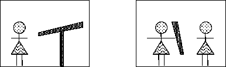

1.5 Символическая логика#
До сих пор мы иллюстрировали всё примерами на естественном языке. Хотя естественный язык хорошо работает во многих ситуациях, у него есть свои недостатки. Предложения на естественном языке могут быть сложными, двусмысленными, и неправильное понимание смысла предложения может привести к ошибкам в рассуждениях.
В качестве примера двусмысленности представим, что я написал предложение: В комнате есть девочка с телескопом. Посмотрите на следующую иллюстрацию — она показывает два возможных значения этого предложения. Я говорю о девочке, которая находится в комнате, где есть телескоп? Или о девочке, которая находится в комнате и держит телескоп в руках? 
Подобные сложности и двусмысленности иногда могут быть забавными, если приводят к интерпретациям, которых автор вовсе не имел в виду. Ниже приведены примеры известных газетных заголовков, допускающих несколько толкований. Использование формального языка исключает подобные непреднамеренные двусмысленности (и, к счастью или к сожалению, избавляет нас от случайного юмора).
«Crowds Rushing to See Pope Trample 6 to Death
(Толпа спешит увидеть Папу. Шестеро затоптано насмерть.) Journal Star, Peoria, 1980»
«Scientists Grow Frog Eyes and Ears
(Ученые отрастили лягушачьи глаза и уши.)
The Daily Camera, Boulder, 2000»
«British Left Waffles On Falkland Islands
(Британцы колеблются по поводу Фолклендских островов или Британцы оставили вафли на Фолклендских островах)»
«Food Stamp Recipients Turn to Plastic
(Получатели продуктовых талонов переходят на пластик или Получатели продуктовых талонов превратились в пластик) The Miami Herald, 1991»
«Indian Ocean Talks
(Переговоры по поводу Индийского океана или Индийский океан говорит) The Plain Dealer, 1977»
«Fried Chicken Cooked in Microwave Wins Trip
(Жареная курица, приготовленная в микроволновке, выигрывает поездку. Думаю, тут имеется ввиду автор рецепта) The Oregonian, Portland, 1981»
В качестве примера ошибок, возникающих при рассуждениях с предложениями на естественном языке, рассмотрим следующие примеры. В первом из них мы используем транзитивность отношения «лучше» для вывода заключения о сравнительном качестве шампанского и содовой на основе сравнительного качества шампанского и пива, а также пива и содовой. Пока всё в порядке.
Шампанское лучше пива.
Пиво лучше содовой.
Следовательно, шампанское лучше содовой.
Это имеет смысл. Это пример общего правила о транзитивности отношения «лучше». Если x лучше y, а y лучше z, то x будет лучше z.
x лучше y.
y лучше z.
Следовательно, x лучше z.
Теперь рассмотрим, что происходит, когда мы применяем это правило в случае, показанном ниже. Плохой секс лучше, чем ничего. Ничего лучше, чем хороший секс. Следовательно, плохой секс лучше хорошего. Серьезно?
Тут используется игра слов в английском языке: Bad sex is better than nothing. Nothing is better than good sex. Therefore, bad sex is better than good sex.
Форма аргумента такая же, как в предыдущем примере, но заключение выглядит несколько менее правдоподобным. Проблема в этом случае заключается в том, что использование слова «ничего» здесь синтаксически похоже на использование слова «пиво» в предыдущем примере, но в английском языке оно означает совершенно другое.
Логика устраняет эти трудности с помощью использования формального языка для кодирования информации. Учитывая синтаксис и семантику этого формального языка, мы можем дать точное определение понятию логического заключения. Более того, мы можем установить точные правила вывода, которые приводят только к логическим заключениям.
В этом отношении существует сильная аналогия между методами формальной логики и методами школьной алгебры. Чтобы проиллюстрировать эту аналогию, рассмотрим следующую задачу по алгебре.
x - 3y = 0
x + y = 12
Используя методы алгебры, мы можем преобразовать эти выражения, чтобы решить задачу. Сначала вычтем второе уравнение из первого.
x - 3y = 0
x + y = 12
________
-4y = -12
Затем делим обе стороны полученного уравнения на -4, чтобы получить значение для y. Подставив это значение обратно в одно из предыдущих уравнений, мы получаем значение для x.
x = 9
y = 3
Теперь рассмотрим следующую логическую задачу.
Если Мэри любит Пэта, то Мэри любит Куинси. Если сейчас понедельник и идёт дождь, то Мэри любит либо Пэта, либо Куинси.
Вопрос: если сейчас понедельник и идёт дождь, любит ли Мэри Куинси?Как и в случае с задачей по алгебре, первый шаг — это формализация. Пусть p обозначает утверждение «Мэри любит Пэта», q — «Мэри любит Куинси», m — «сейчас понедельник», а r — «идёт дождь».
С этими обозначениями основную информацию из задачи можно выразить следующими логическими высказываниями:
Первое: из p следует q — если Мэри любит Пэта, то она любит и Куинси.
Второе: из m и r следует p или q — если сейчас понедельник и идёт дождь, то Мэри любит либо Пэта, либо Куинси.
$\(
\begin{align*}
p &\Rightarrow q \\
m \land r &\Rightarrow p \lor q \\
& или \\
'Мэри \,любит \,Пэта' &\Rightarrow 'Мэри \,любит \,Куинси' \\
'понедельник' \land 'дождь' &\Rightarrow 'Мэри \,любит \,Пэта \lor 'Мэри \,любит \,Куинси' \\
\end{align*}
\)$
Как и в алгебре, формальная логика определяет операции, которые мы можем использовать для преобразования выражений. Операция, показанная ниже, является вариантом так называемой логики высказываний (Propositional Resolution). Выражения над чертой являются посылками (premises) правила, а выражение под чертой — заключением (conclusion).
$\(
\begin{align*}
p_1 \land \dots \land p_k &\Rightarrow q_1 \lor \dots \lor q_l \\
r_1 \land \dots \land r_m &\Rightarrow s_1 \lor \dots \lor s_n \\
\hline
p_1 \land \dots \land p_k \land r_1 \land \dots \land r_m &\Rightarrow q_1 \lor \dots \lor q_l \lor s_1 \lor \dots \lor s_n
\end{align*}
\)$
Существует два уточнения этой операции.
(1) Если высказывание в левой части одного предложения совпадает с высказыванием в правой части другого, эти два символа можно опустить, при этом допускается удаление только одной такой пары.
(2) Если какая-либо переменная повторяется на одной и той же стороне одного предложения, все её вхождения, кроме одного, можно удалить.
Мы можем использовать эту операцию для решения задачи о любовной жизни Мэри. Посмотрев на два приведённых выше утверждения, мы замечаем, что p встречается слева в одном предложении и справа — в другом. Следовательно, мы можем исключить p и тем самым получить вывод: если понедельник и идёт дождь, то Мэри любит Куинси или Мэри любит Куинси.
$\(
\begin{aligned}
p &\Rightarrow q \\
m \land r &\Rightarrow p \lor q \\
\hline
m \land r &\Rightarrow q \lor q
\end{aligned}
\)\(
Отбросив повторяющийся символ в правой части, мы приходим к заключению: если понедельник и идёт дождь, то Мэри любит Куинси.
\)\(
\begin{aligned}
m \land r &\Rightarrow q \lor q \\
\hline
m \land r &\Rightarrow q
\end{aligned}
\)$
Этот пример интересен тем, что демонстрирует наш формальный язык для кодирования логической информации. Как и в алгебре, мы используем символы для представления релевантных аспектов рассматриваемого мира и операторы для связи этих символов с целью выражения информации о вещах, которые они представляют.
Пример также вводит одну из самых важных операций в формальной логике — резолюцию (в данном случае — ограниченную форму резолюции). Резолюция обладает свойством полноты для важного класса логических задач, то есть она является единственной необходимой операцией для решения любой задачи в этом классе.